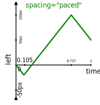

It is often useful to be able to provide a series of property values
without having calculate the keyframe offset of each value in
time but instead to rely on some automatic spacing.
For example, rather than typing:
elem.animate([ { color: 'blue', offset: 0 },
{ color: 'green', offset: 1/3 },
{ color: 'red', offset: 2/3 },
{ color: 'yellow', offset: 1 } ], 2);
It should be possible to type the following and allow the user agent
to calculate the offset of each
keyframe:
elem.animate([ { color: 'blue' },
{ color: 'green' },
{ color: 'red' },
{ color: 'yellow' } ], 2);
Web Animations provides spacing modes for this purpose. The default
spacing mode for keyframe animation effects is
“distribute” which
produces the result described above.
The other spacing mode, “paced”, is useful when
it is desirable to maintain an even rate of change such as for motion path animation.
For example, consider the following animation:
elem.animate([ { left: '0px' },
{ left: '-20px' },
{ left: '100px' },
{ left: '50px' } ], 1);
The resulting value of the left
property is illustrated below:
The animated value of the left property over time when applying the
distribute spacing
mode.
The values are evenly spaced in time but the rate of change differs
for each segment as indicated the varying slope of the graph.
We can use the paced
spacing mode as follows:
elem.animate(
new KeyframeEffect([ { left: '0px' },
{ left: '-20px' },
{ left: '100px' },
{ left: '50px' } ], { spacing: "paced" }), 1);
The result is illustrated below:

The animated value of the left property over time when applying the
paced spacing mode.
The absolute value of the slope is graph is equal for all segments
of the animation indicating a constant rate of change.
It is also possible to combine fixed keyframe offsets with
spacing modes as follows:
elem.animate(
new KeyframeEffect([ { left: '0px' },
{ left: '-20px' },
{ left: '100px', offset: 0.5 },
{ left: '50px' } ], { spacing: "paced" }), 1);
The result is illustrated below:
The animated value of the left property over time when applying the
paced spacing mode and
a fixed keyframe offset that
puts the 100px value at 0.5.
The slope of the graph is equal for the first two segments but
changes for the last segment in order to accommodate the fixed
offset.
Applying spacing to keyframes
We define a generic procedure for evenly distributing
a keyframe, keyframe, between two reference
keyframes, start and end, whose keyframe
offsets are not null, as follows:
- Let offsetk be the keyframe
offset of a keyframe k.
- Let n be the number of keyframes between and
including start and end minus 1.
- Let index refer to the position of
keyframe in the sequence of keyframes between
start and end such that the first keyframe
after start has an index of 1.
- Set the keyframe offset of keyframe to
offsetstart +
(offsetend −
offsetstart)
× index / n.
The computed keyframe offset values of each keyframe
with a null keyframe offset are determined using the following
procedure.
- Let keyframes refer to the list of keyframes
associated with the keyframe animation effect.
- If keyframes contains more than one
keyframe and the keyframe offset of
the first keyframe in keyframes is null,
set the keyframe offset of
the first keyframe to 0.
- If the keyframe offset of the last keyframe in
distributed keyframes is null, set its
keyframe offset to 1.
- For each pair of keyframes A and B
where:
calculate the keyframe offset of
each keyframe between A and B
depending on the keyframe spacing mode as follows:
- If the spacing mode
is paced,
-
- Define a keyframe as paceable if it
contains a value for the paced property.
- Let paced A be the first keyframe in the
range [A, B] that is
paceable, if any.
- Let paced B be the last keyframe in the
range [A, B] that is
paceable, if any.
- If there is no paced A or paced
B let both refer to B.
Note that in this case, the spacing
behavior degenerates to distribute
spacing.
- For each keyframe in the range
(A, paced A] and
[paced B, B),
apply the procedure for evenly distributing
a keyframe using A and B as
the start and end keyframes
respectively.
Yes, this is correct.
We want, index and n in that
procedure to reflect all the keyframes
between A and B, not just the
keyframes between, for example, A and
spaced A.
- For each keyframe in the range
(paced A, paced B) that is
paceable:
- Let
distk
represent the cumulative distance to a keyframe
k from paced A
as calculated by applying the distance
computation defined by the animation
behavior of the paced property to the
values of the paced property on each pair of
successive paceable keyframes in the range
[paced A, k].
- Set the offset of k to
offsetpaced
A
+
(offsetpaced
B
−
offsetpaced
A)
×
distk
/
distpaced
B
- For each keyframe in the range (paced A,
paced B) that still has
a null keyframe offset (because it is not
paceable), apply the procedure
for evenly distributing a keyframe using
the nearest keyframe before and after the
keyframe in question in keyframes that has
a keyframe offset that is not null, as the
start and end keyframes
respectively.
- Otherwise,
-
Apply the procedure for evenly distributing
a keyframe to each keyframe in the range (A,
B) using A and B as the
start and end keyframes respectively.
Note that although the above procedure defines computing keyframe
offsets in terms of overwriting null values, user agents that
implement the programming
interface are required to maintain the original null values as
well as calculating the computed offsets.
This is because the getFrames method of the
Timing interface returns keyframe offsets both before
and after applying spacing.
The above algorithm is quite complex.
It attempts to cover all possible combinations of input where
keyframe offsets and or paced property values may be missing.
Furthermore, it attempts to do this in a way that degenerates
consistently and also allows the author to combine fixed offsets
with either pacing or distribute spacing.
We await implementation experience to determine if the complexity
is justified.